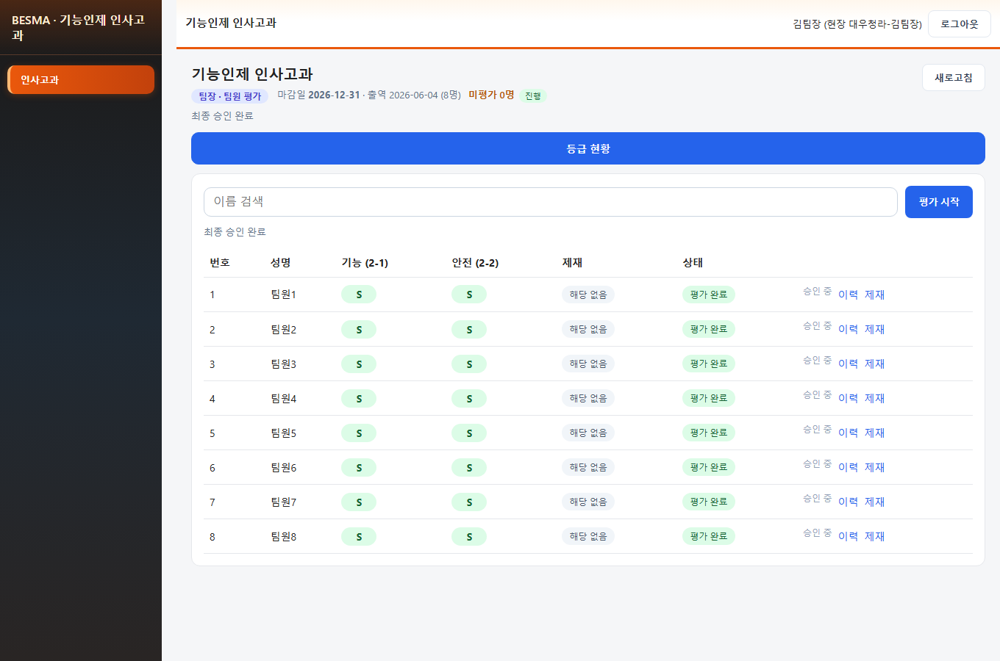
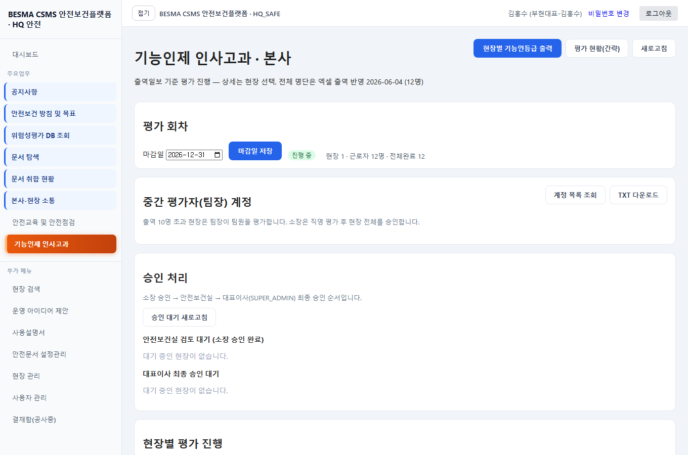
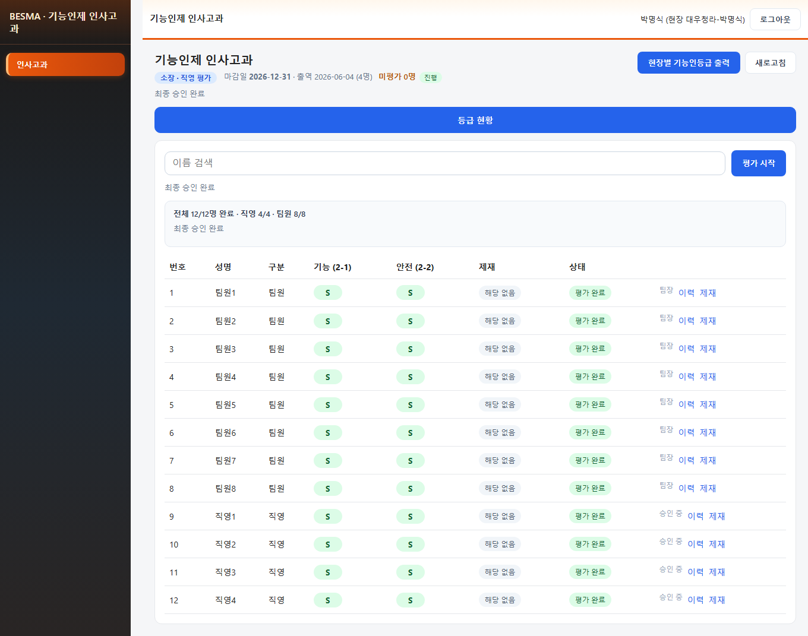

화면 캡처




API 시뮬레이션 실패 · 배포 전 권고 2건
| 역할 | 로그인 ID | 비밀번호 |
|---|---|---|
| team_leader | 대우청라-김팀장 | 750101 |
| manager | 대우청라-박명식 | 661123 |
| hq | 안전보건-조동문 | 600321 |
| ceo | 부현대표-김홍수 | 611001 |
| 단계 | 심각도 | 내용 | 비고 |
|---|---|---|---|
| ops | warn | 로컬 DB가 alembic head(0061)인데 0057~0059 컬럼(last_attendance_date, assigned_evaluator_login_id, rep_name) 누락 | repair_fe_db_schema.py로 보정. 배포 전 alembic upgrade head 재실행 권장 |
| ui | info | 안전·제재 통합 UI는 로컬만 반영, 운영 미배포 | 일괄 배포 시 Vercel 포함 |
| ops | warn | 로컬 DB가 alembic head(0061)인데 0057~0059 컬럼(last_attendance_date, assigned_evaluator_login_id, rep_name) 누락 | repair_fe_db_schema.py로 보정. 배포 전 alembic upgrade head 재실행 권장 |
| ui | info | 안전·제재 통합 UI는 로컬만 반영, 운영 미배포 | 일괄 배포 시 Vercel 포함 |
| 단계 | 결과 |
|---|---|
| 1_team_leader_workers | {
"step": "1_team_leader_workers",
"actor": "대우청라-김팀장",
"status": 200,
"role": "TEAM_LEADER",
"worker_count": 8,
"team_split": true
} |
| 1_team_leader_evaluate | {
"step": "1_team_leader_evaluate",
"errors": []
} |
| 2_manager_workers | {
"step": "2_manager_workers",
"actor": "대우청라-박명식",
"status": 200,
"direct_count": 4,
"overview_count": 12,
"approval": {
"status": "IN_PROGRESS",
"status_label": "평가 진행",
"site_submitted_at": null,
"hq_approved_at": null,
"ceo_approved_at": null,
"reject_note": null,
"rejected_stage": null,
"site_total_workers": 12,
"site_complete_workers": 8,
"direct_total": 4,
"direct_complete": 0,
"team_total": 8,
"team_complete": 8,
"incomplete_count": 4,
"can_submit_site_approval": false,
"evaluation_editable": true
}
} |
| 2_manager_direct_evaluate | {
"step": "2_manager_direct_evaluate",
"errors": []
} |
| 2_manager_approval_check | {
"step": "2_manager_approval_check",
"approval": {
"status": "IN_PROGRESS",
"status_label": "평가 진행",
"site_submitted_at": null,
"hq_approved_at": null,
"ceo_approved_at": null,
"reject_note": null,
"rejected_stage": null,
"site_total_workers": 12,
"site_complete_workers": 12,
"direct_total": 4,
"direct_complete": 4,
"team_total": 8,
"team_complete": 8,
"incomplete_count": 0,
"can_submit_site_approval": true,
"evaluation_editable": true
}
} |
| 2_manager_submit | {
"step": "2_manager_submit",
"status": 200,
"body": "{\"approval\":{\"status\":\"SITE_APPROVED\",\"status_label\":\"소장 승인 · 본사 검토 대기\",\"site_submitted_at\":\"2026-06-08T04:30:48.956122\",\"hq_approved_at\":null,\"ceo_approved_at\":null,\"reject_note\":null,\"rejected_stage\":null}}"
} |
| 3_hq_pending | {
"step": "3_hq_pending",
"actor": "안전보건-조동문",
"status": 200,
"items": [
{
"site_code": "24025",
"status": "SITE_APPROVED",
"status_label": "소장 승인 · 본사 검토 대기",
"site_submitted_at": "2026-06-08T04:30:48.956122",
"hq_approved_at": null,
"ceo_approved_at": null,
"reject_note": null,
"rejected_stage": null,
"site_total_workers": 12,
"site_complete_workers": 12,
"direct_total": 4,
"direct_complete": 4,
"team_total": 8,
"team_complete": 8,
"incomplete_count": 0,
"can_submit_site_approval": false,
"evaluation_editable": false
}
]
} |
| 3_hq_approve | {
"step": "3_hq_approve",
"status": 200,
"body": "{\"approval\":{\"status\":\"HQ_APPROVED\",\"status_label\":\"안전보건실 승인 · 대표 최종 대기\",\"site_submitted_at\":\"2026-06-08T04:30:48.956122\",\"hq_approved_at\":\"2026-06-08T04:30:49.133162\",\"ceo_approved_at\":null,\"reject_note\":null,\"rejected_stage\":null}}"
} |
| 4_ceo_pending | {
"step": "4_ceo_pending",
"actor": "부현대표-김홍수",
"status": 200,
"items": [
{
"site_code": "24025",
"status": "HQ_APPROVED",
"status_label": "안전보건실 승인 · 대표 최종 대기",
"site_submitted_at": "2026-06-08T04:30:48.956122",
"hq_approved_at": "2026-06-08T04:30:49.133162",
"ceo_approved_at": null,
"reject_note": null,
"rejected_stage": null,
"site_total_workers": 12,
"site_complete_workers": 12,
"direct_total": 4,
"direct_complete": 4,
"team_total": 8,
"team_complete": 8,
"incomplete_count": 0,
"can_submit_site_approval": false,
"evaluation_editable": false
}
]
} |
| 4_ceo_approve | {
"step": "4_ceo_approve",
"status": 200,
"body": "{\"approval\":{\"status\":\"CEO_APPROVED\",\"status_label\":\"최종 승인 완료\",\"site_submitted_at\":\"2026-06-08T04:30:48.956122\",\"hq_approved_at\":\"2026-06-08T04:30:49.133162\",\"ceo_approved_at\":\"2026-06-08T04:30:49.298195\",\"reject_note\":null,\"rejected_stage\":null}}"
} |
| 5_ceo_pending_after | {
"step": "5_ceo_pending_after",
"status": 200,
"count": 0
} |


